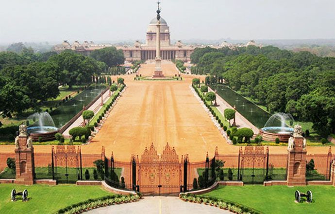

| VISITING PLACES |
| Name |
Origin |
Photo |
| THE REDFORT
| DELHI
|  |
| The Red Fort was the residence of the Mughal emperor for nearly 200 years, until 1857. It is located in the centre of Delhi and houses a number of museums. In addition to accommodating the emperors and their households, it was the ceremonial and political centre of Mughal government and the setting for events critically impacting the region. |
Built in 1648 |
Place 1 |
| QUTB MINAR
| DELHI
|  |
| IT is thought to have been a direct inspiration for the Qutb Minar in Delhi, which was also built by the Ghorid Dynasty. Made of red sandstone and marble, Qutb Minar is a 73-metres tall tapering tower with a diameter measuring 14.32 metres at the base and 2.75 metres at the peak |
|
Place 2 |
| HYMAYUN'S TOMB
| DELHI
|  |
| The tomb was commissioned by Humayun's son Akbarin 1569-70, and designed by Mirak Mirza Ghiyas, a Persian architect chosen by Bega Begum.It was the first garden-tomb on the Indian subcontinent,and is located in Nizamuddin East, Delhi, India, close to the Dina-panah citadel also known as Purana Qilathat Humayun founded in 1533. |
Since 1570 |
Place 3 |
| INDIAGATE
| DELHI
|  |
| The India Gate, (originally called the All India War Memorial), is a war memorial located astride the Rajpath, on the eastern edge of the ‘ceremonial axis’ of New Delhi, India, formerly called Kingsway. India Gate is a memorial to 82,000 soldiers of the undivided Indian Army who died in the period 1914–21 in the First World War, in France |
10th feburary 1921 |
Place 4 |
| AKSHARDHAM
| DELHI
|  |
| Akshardham or Swaminarayan Akshardham complex is a Hindu mandir, and a spiritual-cultural campus in New Delhi, India.[1][2] Also referred to as Delhi Akshardham or Swaminarayan Akshardham, the complex displays millennia of traditional Hindu and Indian culture, spirituality, and architecture. |
Built in 1963 |
Place 5 |
| LOTUSTEMPLE
| DELHI
|  |
| The Lotus Temple, located in New Delhi, India, is a Bahá'í House of Worship completed in 1986. Notable for its flowerlike shape, it serves as the Mother Temple of the Indian subcontinent and has become a prominent attraction in the city. The Lotus Temple has won numerous architectural awards . |
Opened 24th December 1986 |
Place 6 |
| JAMA MASJID
| DELHI
|  |
| It was built by Mughal emperor Shah Jahan between 1644 and 1656 at a cost of 1 million rupees, and was inaugurated by an imam from Bukhara, present-day Uzbekistan. The mosque was completed in 1656 AD with three great gates, four towers and two 40 m high minarets constructed of strips of red |
Since 1656 |
Place 7 |
| LODI GARDENS
| DELHI
|  |
| Lodhi Gardens is a city park situated in New Delhi, India. Spread over 90 acres.it contains, Mohammed Shah's Tomb, Tomb of Sikandar Lodi, Shisha Gumbad and Bara Gumbad,architectural works of the 15th century by Lodhis- who ruled parts of northern India and Punjab and Khyber Pakhtunkhwa province of modern-day Pakistan. |
Since 1526 |
Place 8 |
| RASTHRAPATI BHAWAN
| DELHI
|  |
| the official home of the President of India, located at the Western end of Rajpath in New Delhi, India. It may refer to only the mansion (the 340-room main building) that has the president's official residence, halls, guest rooms and offices. |
Built in 1929 |
Place 9 |
| CONNAUGHT PLACE
| DELHI
|  |
| It is often abbreviated to CP and houses the headquarters of several noted Indian firms. The former location of the headquarters of the British Raj, the area's environs occupy a place of pride in the city.It was developed as a showpiece of Lutyens' Delhi with a prominent Central Business District. |
First theatre built in 1932 |
Place 10 |